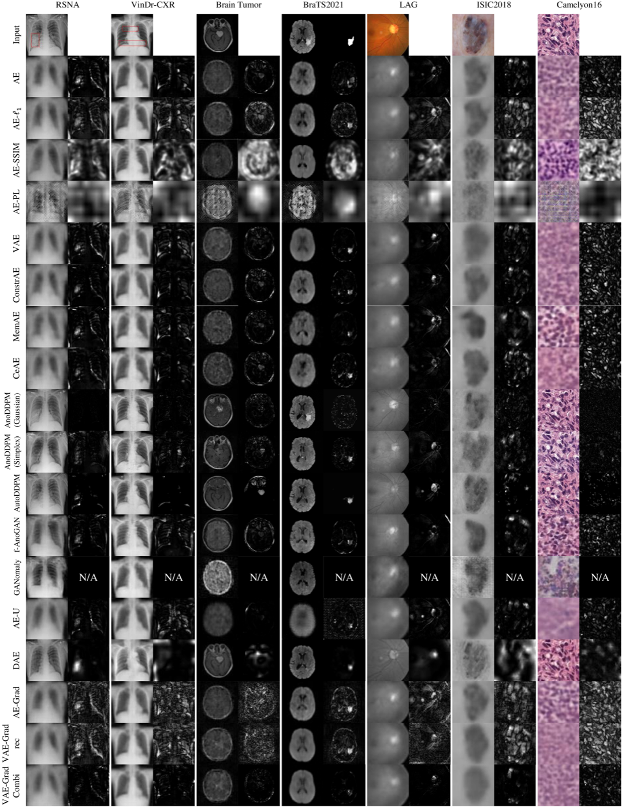
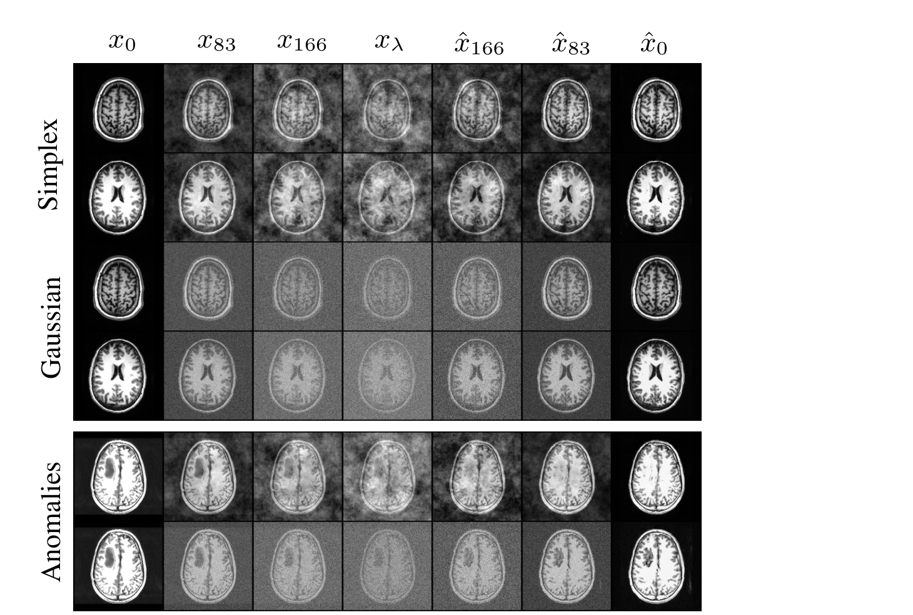
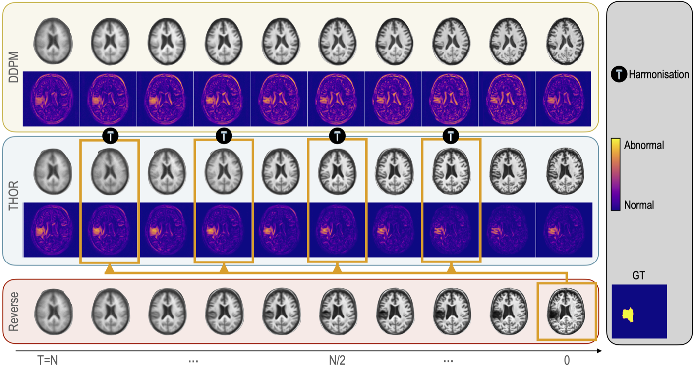
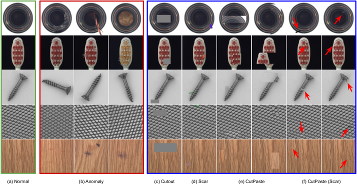
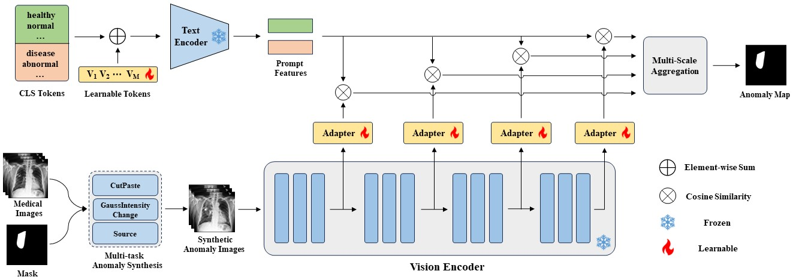

Anomaly Detection
in Medical Imaging
You can't label every disease
- Disease is rare, diverse, and long-tailed — most cases are normal
- You can't enumerate every possible abnormality to label it
- Anatomy + heterogeneity + clinical safety make supervised models brittle
- → The one idea: learn "normal", flag the deviation

sample at source
How the task is framed
- Train on normal → a "normal prior"; score = deviation
- Deviation = reconstruction residual · feature distance · prompt similarity
- Granularity: image-level detection vs pixel-level localization
- Metrics: AUROC · AP · Dice/IoU — the metric choice turns out to matter
(model)→ Deviation
score→ Anomaly map
Three tensions the field is resolving
① Represent "normal"
Reconstruct the image, or embed it?
② Fidelity vs sensitivity
The noise paradox
③ Scarcity & generalization
Little/no abnormal data, many modalities
Existing methods = answers to these tensions. The unresolved parts = future work.
How do we represent
"normal"?
Reconstruct the image · or embed it into a feature space
Reconstruct-and-compare: AE → GAN
- A normal-trained generator can't rebuild pathology → residual = anomaly
- Lineage: AnoGAN → f-AnoGAN
- Failures: mode collapse, low fidelity, the "identity shortcut"
(lesion)→ Pseudo-
healthy→ Residual
= anomaly
Diffusion becomes the backbone
- DDPM: better coverage & fidelity than GAN
- AnoDDPM: Simplex noise → control anomaly size
- AutoDDPM: automatic mask–stitch–resample

figure at source
Don't reconstruct — embed & compare
- Frozen features + memory bank + kNN / one-class
- No generation → fast, stable, strong localization
- ↳ the "boringly strong" baselines new methods must beat
encoder→ Memory
bank→ kNN
distance
Fidelity vs sensitivity
The noise paradox — the central deployment pain point
Erase the lesion, or keep the anatomy?
To erase pathology you inject high noise — but that destroys healthy anatomy → the pseudo-healthy image drifts from the patient → false positives spike, specificity drops.
Too little noise
pathology survives → false negatives
Too much noise
healthy tissue destroyed → false positives
Guidance & latent restoration
- THOR: guidance re-integrates healthy tissue → cuts false positives
- Latent + rectified flow for 3D → context, lower compute
- ↳ partial fixes — specificity stays open

figure at source
Scarcity & generalization
Little or no abnormal data · many modalities and organs
Manufacture the anomalies you lack
- Synthesize disease-like defects (cut-paste, patch interpolation)
- Turns AD into a proxy segmentation task — no real anomalies
- Pro: strong localization · Con: synthetic ≠ real

figure at source
Borrow a foundation model — MVFA-AD
- Domain gap: zero-shot CLIP collapses on medical
- Multi-level adapters + pixel-level V–L alignment

figure at source
MediCLIP & the foundation-model trend
- MediCLIP: few-shot, no real anomalies
- Synthetic tasks + learnable prompts + adapters
- Trend: pathology/radiology foundation models as backbones

figure at source
What benchmarks reveal — MedIAnomaly
- Metric dominates: SSIM/LPIPS/perceptual > L2
- ImageNet features are a strong base
- Simple methods are surprisingly competitive
figure at source
No single winner — trade-offs by family
| Family | Data need | Localization | Interpretability | Compute | Generalization |
|---|---|---|---|---|---|
| Diffusion recon. | normal only | strong | heatmap | high | per-dataset |
| Feature/memory | normal only | strong | low | low | moderate |
| Self-supervised | + synthetic | strong | low | low–med | synthetic-bound |
| VLM adaptation | few-shot | moderate | text-promptable | med | cross-modality |
Pick by modality · data regime · deployment constraint — not by leaderboard alone.
Open challenges
↳ the last two open a new axis — trust & privacy — beyond raw accuracy.
Three directions — closing the loop
① Efficient generative
SDE → latent flow matching; distillation + compression
② Beyond pixels
Reasoning / knowledge-grounded, interpretable, agentic AD
③ Trustworthy FMs
Privacy (unlearning), safety, compliance
Roadmap & takeaways
Near-term
Standardized benchmarks · latent-diffusion/flow baselines · FM adapters
Long-term
Reasoning-grounded, trustworthy, 3D-native systems
- Medical AD = learn-normal, flag-deviation; two engines: diffusion & VLM adaptation
- Real bottlenecks: specificity, 3D, trust, privacy — not raw accuracy
- Frontier = efficient generative + reasoning-grounded + trustworthy
References
- Cai et al. MedIAnomaly. Medical Image Analysis, 2025.
- Wyatt et al. AnoDDPM. CVPRW 2022.
- Bercea et al. AutoDDPM (Mask, Stitch, Re-Sample). 2023.
- Bercea et al. THOR (implicit guidance). MICCAI 2024.
- Huang et al. MVFA-AD. CVPR 2024.
- Zhang et al. MediCLIP. MICCAI 2024.
- Schlegl et al. AnoGAN. IPMI 2017 · f-AnoGAN. MedIA 2019.
- Ho et al. DDPM. NeurIPS 2020.
- Radford et al. CLIP. ICML 2021.
- Roth et al. PatchCore. CVPR 2022.
- Li et al. CutPaste. CVPR 2021 · Tan et al. FPI/PII. MICCAI 2021.
- Zhang et al. LPIPS. CVPR 2018 · Baur et al. survey, MedIA 2021.
- Lipman et al. Flow Matching. ICLR 2023 · Liu et al. Rectified Flow. ICLR 2023.
- Bourtoule et al. Machine Unlearning. IEEE S&P 2021.